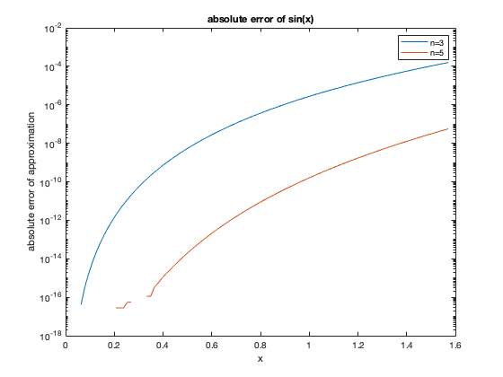

Contents
HomeWork 2
Juan Alejandro Ormaza Sep 7 2020 CS375
clear all; clc; format long e
problem 2.b
x=12:1:15;
x_k=num2str(1+(1./10.^(x)),25);
fprintf(x_k); % this line prints the x_k values for k=12 to k=15
1.000000000001000088900582 1.000000000000099920072216 1.000000000000009992007222 1.000000000000001110223025
problem 3.a
sinErrorExpansion=@(n) 1/(factorial(2*n+1)); n=1; while sinErrorExpansion(n)>2e-8 n=n+1; end n=n-1; %we take one from n because we know that at the last loop of the while % loop the condition for n was not met. n
n =
5
problem 3.b
test=my_sin(1,5) % this is a test to find if my_sin works test2=sin(1) % and it appears it did, since the answer resembles % the built-in sin(x) function
test =
8.414709846480680e-01
test2 =
8.414709848078965e-01
problem 3.c
x=linspace(0,pi/2,100); % creates the x array for the domain of the function. error1 = abs(sin(x)-my_sin(x,3)); error2 = abs(sin(x)-my_sin(x,5)); figure(); semilogy(x,error1,x,error2); xlabel('x'); ylabel('absolute error of approximation'); title('absolute error of sin(x)'); legend('n=3','n=5') % from the figure we see that the error is smaller than 2e-8 (the bound) % for n=5 (my result from 3.a). For n=3, the situation is different as we % find the error is larger and actually exceeds 2e-8 after x~=0.5.
problem 4.a
right_side=@(a,b,c) sqrt(b^2 - 4*a*c); y=right_side(0.5,1000,5e-7); x=1000; %% this is the same as b %%%from the lost of precision theorem we get. lostOfPrecision=1-y/x
lostOfPrecision =
5.000444502911705e-13
problem 4.b
%%%here we compute the "true" roots using the matlab built-in functions.
poli = [0.5 1000 5e-7];
realRoots = roots(poli)
realRoots =
-1.999999999999500e+03
-5.000000000001249e-10
problem 4.c
rootFunction=@(a,b,c) -b + sqrt(b^2 - 4*a*c); myResult = rootFunction(0.5,1000,5e-7) %%%the result of using equation is innacurate because of loss of precision. %%%However, this is to be expected as we lost 12 to 13 bits of precision %%%according to part a of this problem.
myResult =
-4.999947122996673e-10
problem 4.d
newRootFunction=@(a,b,c) -2*c/(b + sqrt(b^2 - 4*a*c)); newRootFunction(0.5,1000,5e-7) %%%by modifying the formulation for our solution we get to a more % "accurate" solution that more closely resembles the result given by the % roots function. In fact, it is the same result up to the 16 decimal % point.
ans =
-5.000000000001249e-10